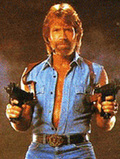

Chuck Norris counted to infinity - twice
21 août 2006

Héros de 24, l’haletante busherie de Fox, Jack Bauer est devenu une icône justicière, une sorte de nouveau Rambo, ou plutôt de nouveau Chuck Norris. Il inspire en effet une jolie collection de petites phrases (lien cassé). Extrait :
- Quand Google ne trouve pas quelque chose, il demande de l’aide à Jack Bauer.
- Jack Bauer a tué tellement de terroristes qu’à un moment, le 5eme fugitif le plus recherché par la CIA était un adolescent de 18 ans en Malaisie qui avait téléchargé les Choristes.
- Jack Bauer est capable d’éliminer la grippe aviaire en jouant au tir au canard.
- Quand Jack Bauer était petit, c’était sa mère qui mangeait ses légumes.
- Quand Jack Bauer est devenu gouverneur de Californie, le Mexique a eu un problème d’immigration.
- Jack Bauer peut avoir un menu petit-déjeuner chez Mac Do après 10h30.
- Durant les pubs, Jack Bauer aide Les Experts à résoudre leurs enquêtes.
- Jack Bauer est capable de laisser un message avant le bip sonore.
- Jack Bauer fait pleurer les oignons.
- Le milk-shake a été inventé après que Jack Bauer eut besoin d’une information de la part d’une banane.
- Jack Bauer peut diviser par zéro et connait les 4 derniers chiffres de Pi.
Et j’ai bien ri en suivant le lien vers les Chuck Norris Facts dont certaines Bauereseries sont largement inspirées ; je vous fais donc partager :
- There is no theory of evolution, just a list of creatures Chuck Norris allows to live.
- Chuck Norris does not sleep. He waits.
- The Great Wall of China was originally created to keep Chuck Norris out. It failed miserably.
- The opening scene of the movie “Saving Private Ryan” is loosely based on games of dodgeball Chuck Norris played in second grade.
- When Chuck Norris goes to donate blood, he declines the syringe, and instead requests a hand gun and a bucket.
- Chuck Norris once ate an entire bottle of sleeping pills. They made him blink.
- Chuck Norris played Russian Roulette with a fully loaded gun and won.
- Chuck Norris can set ants on fire with a magnifying glass. At night.
- In an act of great philanthropy, Chuck made a generous donation to the American Cancer Society. He donated 6,000 dead bodies for scientific research.
- Q: How many Chuck Norris’ does it take to change a light bulb? A: None, Chuck Norris prefers to kill in the dark.
- Chuck Norris counted to infinity - twice.